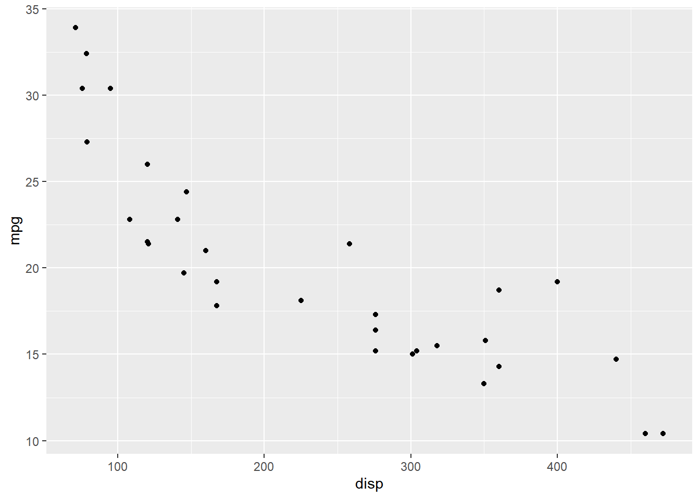

Chapter 4 Labels
4.1 Introduction
In this chapter, we will learn to:
- add title and subtitle to the plot
- modify axis labels
- modify axis range
- remove axis
- format axis
4.2 Basic Plot
Let us start with a simple scatter plot. We will continue to use the mtcars
data set and examine the relationship between displacement and miles per gallon
using geom_point().

4.3 Title & Subtitle
There are two ways to add title to a plot:
ggtitle()labs()
4.3.1 ggtitle()
Let us explore the ggtitle() function first. It takes two arguments:
- label: title of the plot
- subtitle: subtitle of the plot
4.4 Axis Labels
You can add labels to the axis using:
xlab()ylab()labs()
4.5 Labs
The labs() function can be used to add the following to a plot:
- title
- subtitle
- X axis label
- Y axis label
4.6 Axis Range
In certain scenarios, you may want to modify the range of the axis. In ggplot2, we can achieve this using:
xlim()ylim()expand_limits()xlim()andylim()take a numeric vector of length 2 as inputexpand_limits()takes two numeric vectors (each of length 2), one for each axisin all of the above functions, the first element represents the lower limit and the second element represents the upper limit
4.6.1 X Axis
In the below example, we limit the range of the X axis between 0 and 600 using xlim.

4.6.2 Y Axis
Let us limit the range of the Y axis between 0 and 40.
4.6.3 Expand Limits
Let us use expand_limits() to limit the range of both the X and Y axis. The
first input is the range for the X axis and the second input for the Y axis. In
both the cases, we use a numeric vector of length 2 to specify the lower and
upper limit.
4.6.4 Remove Axis Labels
If you want to remove the axis labels all together, use the theme() function.
It allows us to modify every aspect of the theme of the plot. Within theme(),
set the following to element_blank().
axis.title.xaxis.title.y
element_blank() will remove the title of the X and Y axis.
4.7 Format Title & Axis Labels
To format the title or the axis labels, we have to modify the theme of the plot
using the theme() function. We can modify:
- color
- font family
- font face
- font size
- horizontal alignment
- and angle
In addition to theme(), we will also use element_text(). It should be used
whenever you want to modify the appearance of any text element of your plot.
4.7.1 Color
In the below example, we use the color argument within element_text() to
modify the color of the title of the plot to 'blue'.
4.7.2 Font Family
Let us change the font family of the plot title to 'Arial' by using the
family argument.
4.7.3 Font Face
The font face can be any of the following:
plainbolditalicbold.italic
The face argument can be used to modify the font face of the title of the
plot.
4.7.4 Font Size
The size of the title of the plot can be modified using the size argument.
4.8 Horizontal Alignment
To modify the horizontal alignment of the title, use the hjust argument. It
can take values between 0 and 1. If the value is closer to 0, the text
will be left-aligned and viceversa.